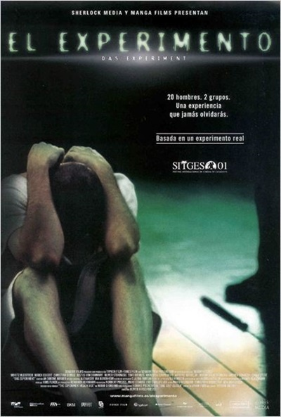

El experimento
| Nombre | El experimento |
|---|---|
| Director | Paul Scheuring |
| Año | 2001 |
| Actores |
|
| Productora: | Paramount Pictures |
Crítica sobre la película:
El experimento es una película basada en hechos reales, de un experimento que se realizó en los años 70 en la Universidad de Stanford. Los psicólogos en el sótano de la Universidad recrearon el ambiente de una cárcel asignándole a cada uno de los participantes que se presentaron voluntariamente un rol: guardia o preso. De esta manera querían simular un contexto lo más controlado posible para estudiar las relaciones y comportamientos humanos dentro de este entorno.
Su director ha sabido exponer esas ideas preconcebidas bajo una capa de cine de intriga y algo de cine fantástico, dotando al filme de un fuerte suspense de modo que el público sigue con interés creciente el fluir de la historia, dramática y exasperante por su violencia. Violencia que se hace muy ingrata pero nada complaciente con la morbosidad de algunas de sus escenas.
Valoración: 7,9/10